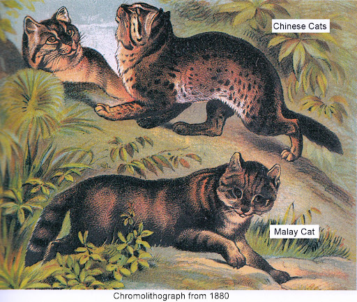
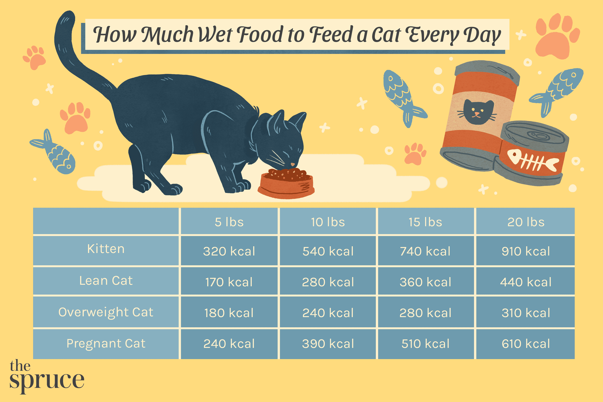

The cat (Felis catus), commonly referred to as the domestic cat or
house cat, is the only domesticated species in the family Felidae.
Recent advances in archaeology and genetics have shown that the
domestication of the cat occurred in the Near East around 7500 BC.
It is commonly kept as a house pet and farm cat, but also ranges
freely as a feral cat avoiding human contact. It is valued by
humans for companionship and its ability to kill vermin. Because
of its retractable claws, it is adapted to killing small prey like
mice and rats. It has a strong, flexible body, quick reflexes,
sharp teeth, and its night vision and sense of smell are well
developed. It is a social species, but a solitary hunter and a
crepuscular predator. Cat communication includes vocalizations
like meowing, purring, trilling, hissing, growling, and grunting
as well as cat body language. It can hear sounds too faint or too
high in frequency for human ears, such as those made by small
mammals. It also secretes and perceives pheromones.
Read the full article
Cat Breeds
As of 2023, The International Cat Association (TICA) recognizes 73
standardized breeds, the Cat Fanciers' Association (CFA)
recognizes 45, the Fédération Internationale Féline (FIFe)
recognizes 50, the Governing Council of the Cat Fancy (GCCF)
recognizes 45, and the World Cat Federation (WCF) recognizes 69.
know more
Cat Ancestry

Nearly all cats, including lions, tigers and the domestic cat, are
descended from one prehistoric creature. The oldest known
relative, the African Wildcat, first developed over 12 millions
years ago. The species still exists, living in the Savannah in the
Middle East and Africa. Cats began to choose to live with people
in 4000 BC, in Ancient Egypt. They began to search towns for food,
usually rats in Egyptian grain stores, and the relationship
between cats and humans began. The Ancient Egyptians welcomed cats
into their home, usually to keep snakes away. They began to
worship cats as sacred animals, banning them from being taken to
other countries.
Read more
Feeding Your Cat

Feeding your cat is an essential part of their care. It's important
to provide a well-balanced diet that meets their nutritional needs.
Choose high-quality cat food and follow the recommended feeding
guidelines. Additionally, make sure your cat has access to fresh
water at all times.
Cats are obligate carnivores, so their diet should include a good
amount of animal protein. Consult with your veterinarian to
determine the best diet for your cat based on factors like age,
weight, and health conditions.
Discover more
How to Bathe Your Cat
Bathing your cat can be a challenging task, but with proper
technique, it can become a stress-free experience for both you and
your feline friend. Here are some tips for bathing your cat:
Choose a calm environment and make sure you have all the necessary
supplies ready.
Use cat-friendly shampoo and lukewarm water.
Gently introduce your cat to the water and reassure them
throughout the process.
Thoroughly rinse off the shampoo and dry your cat with a towel.
Provide treats and positive reinforcement after the bath to create
a positive association.
Cat Health Care
Being a responsible cat owner means looking after their health and
welfare at all times. The best thing you can do is to make sure they
have a calm, relaxed life, but there are a few other things to remember
as well. Here are our tips for keeping your cat healthy and happy.
Regular grooming and health checks
Cats enjoy regular grooming, which keeps their coat in good condition.
Grooming your cat each day is a great way to notice changes in their
health. Remember:
Spot health problems early by checking for signs of injury or illness
- and don't forget, cats have a similar pain threshold to people.
Keep an eye out for behaviour changes - stressed or insecure cats can
become unwell, and changes to their behaviour can be an early sign
that something's wrong.
Changes may not always be obvious, as cats can have different ways of
showing that they're upset or in pain.
Get it checked - if you notice anything unusual, including changes in
behaviour or grooming habits, take your cat to the vet as soon as
possible.
Only use medicine your vet has prescribed - human and dog medicines
can be very dangerous to cats.
Get your cat neutered
To prevent unexpected kittens, it's also a good idea to get your cat
spayed or neutered. This simple operation is carried out by a vet, and
for female cats, it should be done before they reach four months. For
male cats, neutering (or 'the snip') will stop them from fighting with
other cats, so they're less likely to be injured or catch diseases. It
can also stop them from spraying in the house.
Take out pet insurance
Vet bills can be expensive, so it's a good idea to take out pet
insurance to save you from any nasty surprises. Pet health care packages
can help you manage vet costs too. Many vets provide these, including
Medivet, CVS UK Ltd veterinary group practices and Companion
Care/Vets4Pets. Find your local vet to discuss their healthcare scheme.
Know your cat's breed
Finally, different cat breeds are prone to their own health and
behaviour problems, so reading up on your cat's breed will tell you what
to look out for. Some breeds have exaggerated physical features that can
reduce their quality of life, while others are prone to inherited
disorders or diseases. As always, ask your vet for advice if you're not
sure about anything.